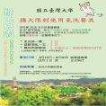

惠請全校師生同仁自備餐具及購物袋
-

為減少校園垃圾量，愛護地球資源，本校學務處於本（97）年臺大80週年，與相關學生環保社團共同推行「綠色校園」宣導方案。
訂於97學年度第1學期起，擴大限制校內免洗餐具的使用，內容如下： - （一）校內教職員工生或來賓、訪客欲向本校餐飲廠商索取免洗筷、塑膠湯匙需付費取得（此指為外帶使用，提供顧客內用餐食時仍不得販售提供免洗餐具）。
- （二）配合之餐飲廠商：全校餐廳、福利社（便利超商）、便餐車、外訂盒餐供應…等。
- （三）收費價格：免洗筷每雙1元；塑膠湯匙每支1元；購物用塑膠袋之價格，由各家業者自訂（上述價格於實行一學期後，再行修正）。
-
（四）自97學年度第1學期開學日（9月15日）起執行，並於10月1日起實際收費。
敬請轉知校外貴賓及訪客，共同減少校園垃圾，維護地球環境。